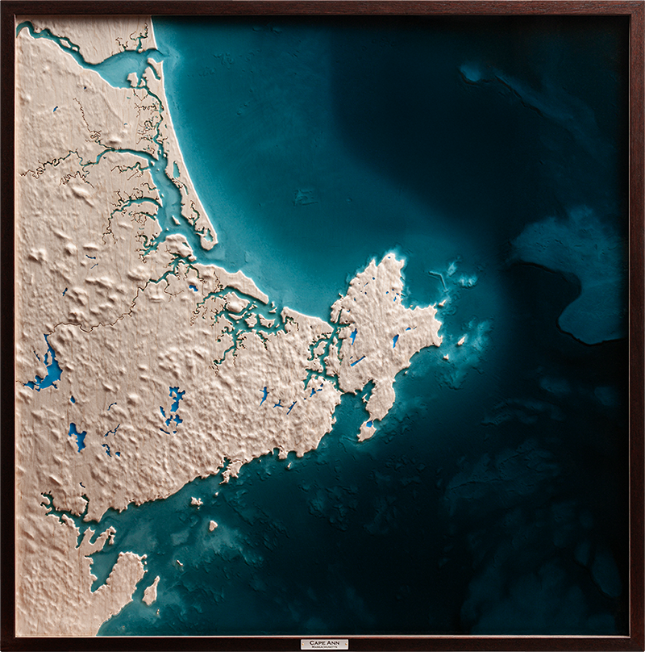
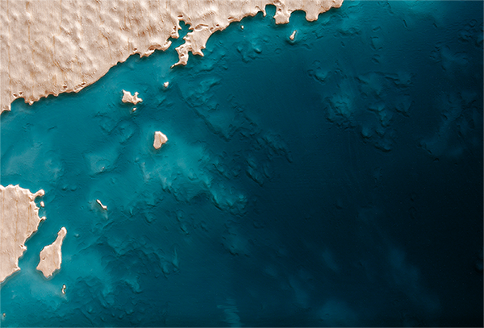

Cape Ann
Massachusetts
Relief of Cape Ann, where granite shoreline, tidal estuaries, and working water meet the Atlantic. Hardwood forms the land, with laser-etched tributaries extending inland through the watershed. Translucent resin defines the tidal edge and offshore shelf, keeping river, harbor, and open water in relation.

Complete topographic composition

Ocean floor detail
The couple's children commissioned this piece for their parents' 50th wedding anniversary. The conversation centered on continuity: a marriage shaped over decades along the same granite coast, with rivers, marshes, harbors, and offshore water all part of the place they know.
The design was built around the full coastal system. Tributaries were laser-etched inland and tidal marshes were kept legible where fresh water meets salt. The bathymetry gives the coast a longer memory, carrying the shape of land that now lies beneath the Atlantic.
Resin was mixed toward the color of Atlantic summer water, a sea-glass green suited to a living coastline. The piece was designed to hold land, sea, and family history in the same field of view.
— Artist's Note